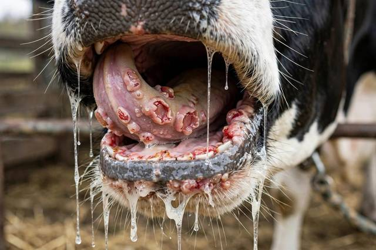

یہ بیماری کیا ہے
منہ کھر ایک انتہائی تیزی سے پھیلنے والی وائرل بیماری ہے جو دو کھروں والے جانوروں — گائے، بھینس، بھیڑ، بکری اور سور — کو ہوتی ہے۔ ایک بیمار جانور سے پورے فارم اور آس پاس کے علاقے میں بیماری پھیل سکتی ہے۔
یہ بیماری انسانوں کی "ہاتھ، پاؤں اور منہ" والی بیماری سے مختلف ہے — دونوں کو ایک نہ سمجھیں۔
اہم علامات
- تیز بخار اور بھوک ختم ہو جانا
- منہ سے رال ٹپکنا
- منہ، زبان اور مسوڑھوں پر چھالے جو پھٹ کر زخم بن جائیں
- پاؤں کے درمیان اور کھروں کے اوپر چھالے — جانور لنگڑانے لگے
- دودھ اچانک واضح کم ہو جانا
- چھوٹے بچھڑوں میں بیماری شدید ہو سکتی ہے، حتیٰ کہ اچانک موت بھی ہو سکتی ہے
بیماری کیسے پھیلتی ہے
وائرس بیمار جانور کے رابطے سے، اور آلودہ چیزوں — اوزار، گاڑیاں، کپڑے، چارہ، پانی — کے ذریعے پھیلتا ہے۔ جانوروں اور لوگوں کی آمد و رفت بیماری کو ایک فارم سے دوسرے فارم تک لے جاتی ہے۔ اسی لیے پھیلاؤ روکنا علاج سے زیادہ اہم ہے۔
دیکھ بھال کیسے کریں
منہ کھر کا کوئی مخصوص علاج نہیں۔ دیکھ بھال کا مقصد جانور کو سہارا دینا ہے تاکہ وہ خود بیماری سے لڑ سکے:
- نرم و آسانی سے کھایا جانے والا چارہ اور ہر وقت صاف پانی دیں۔
- منہ اور پاؤں کے زخموں کی نرمی سے دیکھ بھال ڈاکٹر کی ہدایت کے مطابق کریں۔
- بخار و درد کی دوا صرف ڈاکٹر کے مشورے سے دیں۔
- بیمار جانور کو آرام دہ، خشک اور صاف جگہ رکھیں۔
⚠️ اہم: اینٹی بایوٹک وائرس کا علاج نہیں ہے۔ وہ صرف اس صورت میں دی جاتی ہے جب ڈاکٹر ثانوی جراثیمی انفیکشن کی تشخیص کرے۔ خود سے دوائیں آزمانا نقصان دہ ہو سکتا ہے۔
ویکسین — اصل بچاؤ
منہ کھر سے بچاؤ کا پکا طریقہ باقاعدہ ویکسینیشن ہے — عام طور پر سال میں دو بار (تفصیل ویکسینیشن شیڈول والے صفحے پر ہے)۔ ویکسین اس وقت زیادہ فائدہ دیتی ہے جب علاقے میں چلنے والی وائرس کی قسم سے ملتی ہو اور پورے ریوڑ کو وقت پر لگے۔
یہ کام ہرگز نہ کریں
- بیمار یا مشتبہ جانور کو منڈی، میلے یا دوسرے فارم پر نہ لے جائیں۔
- بیماری کے دنوں میں جانوروں، دودھ، اوزاروں اور مہمانوں کی فارم آمد و رفت نہ کریں۔
- مشتبہ کیس کی اطلاع دینے میں دیر نہ کریں — فوراً قریبی ویٹرنری ہسپتال/محکمہ لائیوسٹاک کو بتائیں۔
- نیا خریدا جانور فوراً ریوڑ میں نہ ملائیں — پہلے کچھ دن الگ (قرنطینہ) رکھ کر صحت دیکھیں۔
- بیمار جانور کے برتن، رسی اور اوزار صحت مند جانوروں پر استعمال نہ کریں۔
- خود ساختہ ٹوٹکوں اور غیروں کے کہنے پر دوائیں آزما کر وقت ضائع نہ کریں۔
اکثر پوچھے جانے والے سوالات
کیا منہ کھر انسانوں کو بھی لگتی ہے؟
یہ بیماری جانوروں کی ہے اور انسانوں کی ہاتھ، پاؤں اور منہ والی بیماری سے الگ ہے۔ پھر بھی بیمار جانور کی دیکھ بھال میں صفائی کا خیال رکھیں اور دودھ ابال کر استعمال کریں۔
اس بیماری کا علاج کیوں نہیں ہے؟
کیونکہ یہ وائرس سے ہوتی ہے اور وائرس کے خلاف کوئی مخصوص دوا موجود نہیں۔ اس لیے تمام توجہ دیکھ بھال، پھیلاؤ روکنے اور ویکسین پر ہوتی ہے۔
بیمار جانور کا دودھ استعمال ہو سکتا ہے؟
بیمار جانور کا دودھ بچھڑوں کو نہ پلائیں اور اسے دوسرے دودھ میں نہ ملائیں۔ دودھ کے استعمال کے بارے میں مقامی ویٹرنری حکام کی ہدایت پر عمل کریں۔
ویکسین لگی ہوئی تھی پھر بھی بیماری کیوں آ گئی؟
اس کی وجوہات ہو سکتی ہیں: ویکسین کی بوسٹر خوراک رہ گئی ہو، ویکسین گرم ہو کر بے اثر ہو گئی ہو، یا وائرس کی قسم ویکسین سے مختلف ہو۔ اسی لیے مکمل شیڈول اور کولڈ چین ضروری ہے۔
بچھڑوں میں یہ بیماری زیادہ خطرناک کیوں ہے؟
چھوٹے بچھڑوں میں وائرس دل کے عضلے کو بھی نقصان پہنچا سکتا ہے، جس سے اچانک موت ہو سکتی ہے۔ اس لیے وبا کے دنوں میں بچھڑوں کی خاص حفاظت کریں۔
متعلقہ صفحات
ویکسینیشن شیڈول · ساڑھ (تھن کی سوزش) · بچھڑوں کی پرورش · دودھ بڑھانے کی رہنمائی · کیڑوں کی دوا (ڈی ورمنگ) · مکمل انگریزی رہنمائی: Foot-and-Mouth Disease (FMD)
⚠️ اہم بات: یہ رہنمائی صرف تعلیمی مقصد کے لیے ہے۔ بیماری کی درست تشخیص اور دوا کی خوراک کے لیے اپنے قریبی رجسٹرڈ ویٹرنری ڈاکٹر سے ضرور مشورہ کریں۔